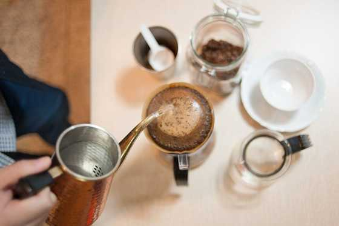
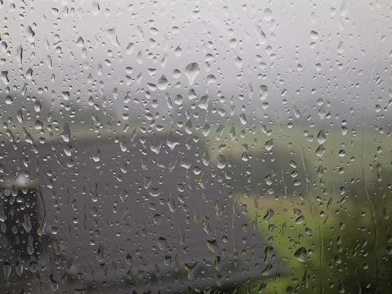

匝瑳・八日市場のブックカフェ
ぐるり
Guluri Book Cafe
人も、本も、まちの話も、ぐるりとめぐる居場所。
本を読みながらコーヒーを飲み、棚の品や人との出会いを楽しむ。そんな時間を思い描いて作った試作ページです。
Instagramを見る
お店の由来と想い
匝瑳市の「街の本屋」だった多田屋八日市場本店が2022年12月に閉店。その後、街の文化拠点をつくり直そうと、市の地域おこし協力隊員の北條将徳さんが、八日市場の商店街通りにブックカフェ&リユースの店として開いたのが「ぐるり」です。「地域の居場所や、新しいことが始まる場所に」という想いが紹介されています。
店名には「人やモノ、情報が循環する場所に」という思いが込められているそうです。市名の「匝(めぐ)る」の字も重ねられているとのこと。
店内にはコーヒーを飲みながら本を読めるスペースがあり、寄贈された本が並びます。手作り雑貨やアート作品を並べられる有料の貸し棚もあり、カウンター席と、子連れを想定した小上がりがあると紹介されています。改装は移住者の仲間とともにほぼDIYだったそうです。
※上記は新聞・ブログ等の公開情報にもとづく紹介です。最新の様子はInstagramでご確認ください。
メニュー
公開情報で名前が確認できたものを紹介します。内容・価格・提供日は準備中です。
本町ブレンド・そうさブレンド
市内の店のオリジナルブレンドコーヒー。
価格: 準備中
大豆コーヒー
地元産の大豆を使ったコーヒーが紹介されています。
価格: 準備中
県産茶ほか
県産茶などのノンアルコール飲料。
価格: 準備中






写真はフリー素材のイメージです。
口コミ(イメージ例)
以下は制作側が作成したイメージ例で、実在のお客様の声ではありません。
商店街の散歩のついでに立ち寄りました。本を一冊手に取って、コーヒー片手にのんびりできました。
棚に並ぶ雑貨や本を眺めているだけで楽しい店です。また違う棚を見に来たくなります。
カウンターで静かに過ごせました。お店の方との会話から、まちの話も聞けて良い時間でした。